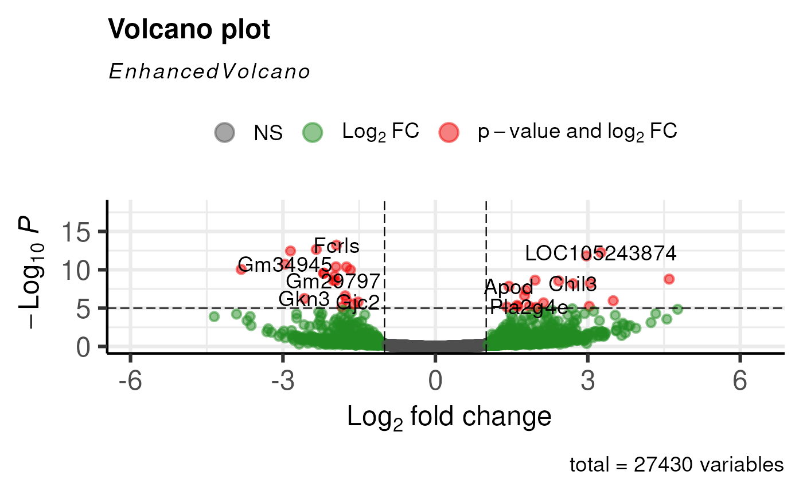

Depending on the package, we will tend to overwrite objects as we run methods on them, such as the following.
In DESeq2, each method will add something to the object
(usually extra columns or a results table).
Here’s an example. We first load the data.
## Loading required package: MatrixGenerics## Loading required package: matrixStats##
## Attaching package: 'MatrixGenerics'## The following objects are masked from 'package:matrixStats':
##
## colAlls, colAnyNAs, colAnys, colAvgsPerRowSet, colCollapse,
## colCounts, colCummaxs, colCummins, colCumprods, colCumsums,
## colDiffs, colIQRDiffs, colIQRs, colLogSumExps, colMadDiffs,
## colMads, colMaxs, colMeans2, colMedians, colMins, colOrderStats,
## colProds, colQuantiles, colRanges, colRanks, colSdDiffs, colSds,
## colSums2, colTabulates, colVarDiffs, colVars, colWeightedMads,
## colWeightedMeans, colWeightedMedians, colWeightedSds,
## colWeightedVars, rowAlls, rowAnyNAs, rowAnys, rowAvgsPerColSet,
## rowCollapse, rowCounts, rowCummaxs, rowCummins, rowCumprods,
## rowCumsums, rowDiffs, rowIQRDiffs, rowIQRs, rowLogSumExps,
## rowMadDiffs, rowMads, rowMaxs, rowMeans2, rowMedians, rowMins,
## rowOrderStats, rowProds, rowQuantiles, rowRanges, rowRanks,
## rowSdDiffs, rowSds, rowSums2, rowTabulates, rowVarDiffs, rowVars,
## rowWeightedMads, rowWeightedMeans, rowWeightedMedians,
## rowWeightedSds, rowWeightedVars## Loading required package: GenomicRanges## Loading required package: stats4## Loading required package: BiocGenerics## Loading required package: generics##
## Attaching package: 'generics'## The following objects are masked from 'package:base':
##
## as.difftime, as.factor, as.ordered, intersect, is.element, setdiff,
## setequal, union##
## Attaching package: 'BiocGenerics'## The following objects are masked from 'package:stats':
##
## IQR, mad, sd, var, xtabs## The following object is masked from 'package:utils':
##
## data## The following objects are masked from 'package:base':
##
## anyDuplicated, aperm, append, as.data.frame, basename, cbind,
## colnames, dirname, do.call, duplicated, eval, evalq, Filter, Find,
## get, grep, grepl, is.unsorted, lapply, Map, mapply, match, mget,
## order, paste, pmax, pmax.int, pmin, pmin.int, Position, rank,
## rbind, Reduce, rownames, sapply, saveRDS, scale, sequence, table,
## tapply, transform, unique, unsplit, which.max, which.min## Loading required package: S4Vectors##
## Attaching package: 'S4Vectors'## The following object is masked from 'package:utils':
##
## findMatches## The following objects are masked from 'package:base':
##
## expand.grid, I, unname## Loading required package: IRanges## Loading required package: Seqinfo## Loading required package: Biobase## Welcome to Bioconductor
##
## Vignettes contain introductory material; view with
## 'browseVignettes()'. To cite Bioconductor, see
## 'citation("Biobase")', and for packages 'citation("pkgname")'.##
## Attaching package: 'Biobase'## The following object is masked from 'package:MatrixGenerics':
##
## rowMedians## The following objects are masked from 'package:matrixStats':
##
## anyMissing, rowMedians## Loading required package: ttservice## tidySummarizedExperiment says: Printing is now handled externally. If you want to visualize the data in a tidy way, do library(tidyprint). See https://github.com/tidyomics/tidyprint for more information.##
## Attaching package: 'tidySummarizedExperiment'## The following object is masked from 'package:generics':
##
## tidy## ── Attaching core tidyverse packages ──────────────────────── tidyverse 2.0.0 ──
## ✔ forcats 1.0.1 ✔ readr 2.2.0
## ✔ lubridate 1.9.5 ✔ stringr 1.6.0
## ✔ purrr 1.2.2 ✔ tibble 3.3.1## ── Conflicts ────────────────────────────────────────── tidyverse_conflicts() ──
## ✖ lubridate::%within%() masks IRanges::%within%()
## ✖ dplyr::bind_cols() masks ttservice::bind_cols()
## ✖ dplyr::bind_rows() masks ttservice::bind_rows()
## ✖ dplyr::collapse() masks IRanges::collapse()
## ✖ dplyr::combine() masks Biobase::combine(), BiocGenerics::combine()
## ✖ dplyr::count() masks matrixStats::count()
## ✖ dplyr::desc() masks IRanges::desc()
## ✖ tidyr::expand() masks S4Vectors::expand()
## ✖ dplyr::filter() masks stats::filter()
## ✖ dplyr::first() masks S4Vectors::first()
## ✖ dplyr::lag() masks stats::lag()
## ✖ ggplot2::Position() masks BiocGenerics::Position(), base::Position()
## ✖ purrr::reduce() masks GenomicRanges::reduce(), IRanges::reduce()
## ✖ dplyr::rename() masks S4Vectors::rename()
## ✖ lubridate::second() masks S4Vectors::second()
## ✖ lubridate::second<-() masks S4Vectors::second<-()
## ✖ dplyr::slice() masks IRanges::slice()
## ℹ Use the conflicted package (<http://conflicted.r-lib.org/>) to force all conflicts to become errors## Loading required package: ggrepel
GSE96870 <- readRDS(system.file("extdata/GSE96870_se.rds", package="bioc2026Intro"))
GSE96870## class: RangedSummarizedExperiment
## dim: 41786 22
## metadata(0):
## assays(1): counts
## rownames(41786): Xkr4 LOC105243853 ... TrnT TrnP
## rowData names(3): ENTREZID product gbkey
## colnames(22): GSM2545337 GSM2545338 ... GSM2545346 GSM2545347
## colData names(12): title geo_accession ... Label Group
GSE96870_deseq <-
DESeqDataSet(GSE96870, design = ~ sex + time) #make DESeqDataset## Warning in DESeqDataSet(GSE96870, design = ~sex + time): some variables in
## design formula are characters, converting to factors
GSE96870_fit <- DESeq(GSE96870_filtered) #run estimateSizeFactors, estimateDispersions, nbinomialWaldTest## estimating size factors## estimating dispersions## gene-wise dispersion estimates## mean-dispersion relationship## final dispersion estimates## fitting model and testing
GSE_results <- results(GSE96870_fit,
contrast = c("time", "Day8", "Day0"),
lfcThreshold = 1,
alpha = 0.05) #calculate results from the contrast
EnhancedVolcano(GSE_results,
lab = rownames(GSE_results),
x = 'log2FoldChange',
y = 'pvalue')## Warning: Using `size` aesthetic for lines was deprecated in ggplot2 3.4.0.
## ℹ Please use `linewidth` instead.
## ℹ The deprecated feature was likely used in the EnhancedVolcano package.
## Please report the issue to the authors.
## This warning is displayed once per session.
## Call `lifecycle::last_lifecycle_warnings()` to see where this warning was
## generated.## Warning: The `size` argument of `element_line()` is deprecated as of ggplot2 3.4.0.
## ℹ Please use the `linewidth` argument instead.
## ℹ The deprecated feature was likely used in the EnhancedVolcano package.
## Please report the issue to the authors.
## This warning is displayed once per session.
## Call `lifecycle::last_lifecycle_warnings()` to see where this warning was
## generated.